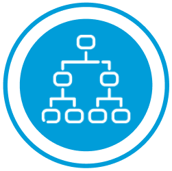

Альтиус Лаб
Компания создана в 2022 году с целью оказания комплекса услуг по систематизации деятельности и формированию единого подхода в области информационной безопасности любых предприятий.
Комплексное обеспечение информационной безопасности
Тестирование на проникновение
- Комплексное тестирование на проникновение
- Анализ защищённости веб и мобильных приложений
- Red Team
Услуги центра мониторинга информационной безопасности (Альтиус SOC)
- Оперативный мониторинг
- Управление инцидентами
Расследования
- Расследование информационно-телекоммуникационных правонарушений
- Компьютерная экспертиза и исследования
Тестирование на проникновение
Тестирование на проникновение (пентест) — это комплексная проверка
защищённости и безопасности через моделирование возможных атак и угроз.
Тестирование является одним из ключевых методов оценки состояния ИБ.
Тестирование на проникновение проводится, чтобы:
- проверить, выдержит ли ИТ-инфраструктура попытку хакерского вторжения
- определить наиболее вероятные и опасные векторы атак на ваши системы
- сформулировать рекомендации по устранению выявленных недостатков
ОБЪЕКТЫ ТЕСТИРОВАНИЯ
01
Анализ защищённости
внешнего периметра
внешнего периметра
Проверка информационных ресурсов заказчика, доступных через интернет: почтового сервера, сервера VPN. Проверка межсетевых экранов и систем защиты сети от внешних угроз. Анализ поможет выявить существующие уязвимости, предотвратить доступ к ценной информации и нарушение критичных элементов инфраструктуры.
02
Тестирование
локальной сети
локальной сети
Проверка возможности атак изнутри организации. Возможна проверка как с предоставлением доступа на уровне рядового сотрудника, так и просто подключение к сети организации.
03
Анализ защищённости
веб-приложений
веб-приложений
В тестирование безопасности веб-приложений входит сайт организации и другие интерфейсы, размещённые на сторонних хостингах и серверах в диапазоне адресов организации. Сюда же относится и тестирование систем аутентификации и авторизации, а также проверка бекендов мобильных приложений.
04
Анализ защищённости
Wi-Fi
Wi-Fi
Исследование безопасности Wi-Fi сетей, которое позволит оценить возможность проникновения во внутреннюю сеть организации по беспроводному каналу.
05
Социальный пентест
Тестирование методами социальной инженерии проверяет знания сотрудников в области информационной безопасности. Помогает предотвратить реальные угрозы в случае кибератаки путём взаимодействия злоумышленника с сотрудниками
06
Red Team
Максимально приближено к условиям реальной атаки, позволяет оценить скорость реагирования, а также эффективность процедур, систем и средств защиты.
МОДЕЛИ ТЕСТИРОВАНИЯ
BlackBox — «чёрный ящик». Специалисты
располагают только общедоступной
информацией о цели исследования, сети
и параметрах. Данный вариант максимально
приближен к реальной ситуации.
В качестве исходных данных для тестирования исполнителю сообщается только имя организации или её сайт, а всю остальную информацию, такую как используемые организацией IP-адреса, сайты, точки выхода офисов и филиалов организации в сеть Интернет, исполнителю придётся выяснять самому.
В качестве исходных данных для тестирования исполнителю сообщается только имя организации или её сайт, а всю остальную информацию, такую как используемые организацией IP-адреса, сайты, точки выхода офисов и филиалов организации в сеть Интернет, исполнителю придётся выяснять самому.
WhiteBox – полная противоположность
BlackBox. В данном случае специалистам
предоставляется максимум необходимой для
них информации вплоть до административного
доступа на любые сервера. Этот способ
позволяет получить наиболее полное
исследование уязвимости объекта.
При WhiteBox исполнителю не придётся тратить время на сбор информации, составление карты сети и другие действия перед началом тестирования, а также сократит время самого тестирования, так как часть проверок просто не придётся делать. Минус данного метода состоит в том, что это менее приближено к ситуации реальной атаки злоумышленника.
При WhiteBox исполнителю не придётся тратить время на сбор информации, составление карты сети и другие действия перед началом тестирования, а также сократит время самого тестирования, так как часть проверок просто не придётся делать. Минус данного метода состоит в том, что это менее приближено к ситуации реальной атаки злоумышленника.
GrayBox – это средний вариант между WhiteBox
и BlackBox, когда исполнитель действует
по варианту BlackBox и периодически
запрашивает информацию о тестируемой
системе для того, чтобы сократить время
исследования или более эффективно
приложить свои усилия.
Такой вариант самый популярный, так как позволяет провести тестирование без трат лишнего времени на сбор информации и больше времени уделить поиску уязвимостей. При этом данный вариант остаётся достаточно близким к реальной ситуации действия злоумышленника.
Такой вариант самый популярный, так как позволяет провести тестирование без трат лишнего времени на сбор информации и больше времени уделить поиску уязвимостей. При этом данный вариант остаётся достаточно близким к реальной ситуации действия злоумышленника.
ЗАКАЗЧИК ПОЛУЧАЕТ
В результате мы предоставляем заказчику
подробный отчёт, который содержит:
- цель и границы проводимых работ
- состав и методику проведения работ по анализу защищённости
- перечень актуальных уязвимостей ИБ
- результаты проведённых проверок
- результаты эксплуатации актуальных уязвимостей ИБ
- рекомендации по устранению выявленных уязвимостей и повышению уровня защищённости
УСЛУГИ ЦЕНТРА МОНИТОРИНГА информационной БЕЗОПАСНОСТИ (АЛЬТИУС SOC)
SOC-центр представляет собой организационно-техническое решение, позволяющее:
- автоматизировано выявлять события, представляющие потенциальную угрозу для организации, ее информационных систем или информационных активов (инциденты ИБ);
- реализовать процесс обработки выявленных инцидентов ИБ, позволяющий в гарантированное время оповещать ответственные подразделения организации о том, что произошло, а также рекомендовать меры, необходимые для восстановления безопасного состояния;
- предоставить необходимую информацию для анализа и принятия обоснованных решений в процессе обеспечения ИБ.
РЕАЛИЗАЦИЯ И ВНЕДРЕНИЕ
Эксперты Альтиус SOC, отвечают за реализацию проектов по внедрению и развитию решений класса
SIEM, SGRC, IRP/SOAR, Threat Intelligence & Security Feeds и Security Intelligence, предоставляют услуги
коммерческого SOC-центра, активно участвуют в жизни российского и международного сообщества
ИБ, осуществляют вклад в развитие открытых репозиториев со сценариями детектирования угроз,
публикуют работы на открытых тематических ресурсах и помогают в переводе работ зарубежных
авторов на русский язык.
Все это выполняется с целью предоставления современны экспертных решений для следующих задач наших заказчиков:
Все это выполняется с целью предоставления современны экспертных решений для следующих задач наших заказчиков:
- Коммерческий SOC-центр
- Автоматизация процессов ИБ в части организации мониторинга событий (SIEM/SEM)
- Обогащение процессов ИБ сторонней аналитикой (TI(P) & Security Feeds)
- Мониторинг и управление инцидентами ИБ (SIEM/IR(P))
- Автоматизация управления и реагирования на инциденты ИБ (IR(P)/SOAR)
- Визуализация и контроль метрик эффективности ИБ (Security Intellegence)
- Автоматизированная атрибуция угроз (MITRE ATT&CK®, SHIELD®, БДУ ФСТЭК)
- Защита бренда
- Выездные расследования и форензика (DFIR)
- Аналитическое сопровождение MSSP услуг Sandbox/EDR
КАК ПРОИСХОДИТ ПОДКЛЮЧЕНИЕ УСЛУГИ SOC
1 день
Заполнение заявки
Оперативное обследование
информационной инфраструктуры для
определения архитектурных особенностей
услуги и внедрения компонент-системы
Организация VPN-тоннеля, внедрение платформы
согласно выбранному варианту архитектуры
услуги или подключение к существующим
решениями, подключение согласованного с
заказчиком перечня источников событий
Согласование перечня базовых
контролей, автоматически
выполняемых центром Альтиус SOC
7 день ПНР

Выбор варианта
архитектуры услуги:
all-in-cclient, hybrid,
all-in-acrc
21 день ПНР
Настройка процессов выявления
и обработки инцидентов в
соответствии с согласованными
параметрами SLA и уровнем
услуги мониторинга
РАССЛЕДОВАНИЕ
Расследование правонарушений, совершаемых с использованием информационнотелекоммуникационных технологий — это специализированная деятельность, направленная
на противодействие компьютерным, экономическим, корпоративным преступлениям.
Качественное расследование высокотехнологичного правонарушения является необходимым
условием для возбуждения уголовного дела или подачи заявления в суд.
Расследование высокотехнологичных правонарушений проводится, чтобы:
- собрать доказательную базу по произошедшему инциденту
- установить лиц, которые могут иметь причастность к происшествию
- выявить уязвимости и пробелы в системе обеспечения безопасности
КОМПЛЕКС УСЛУГ
Расследование информационно-телекоммуникационных правонарушений
- кража информации или объектов интеллектуальной собственности
- хакерские атаки на компьютерные системы и сети (взломы, DDOS, распространение вредоносного ПО, фишинг)
- распространение недостоверной или порочащей информации в СМИ и сети Интернет
- преступления, связанные с использованием цифровых валют (криптовалют)
- экономические и корпоративные преступления
Компьютерная экспертиза и исследования
- криминалистические исследования компьютерной техники
- сбор и закрепление электронно-цифровых доказательств
- квалифицированные OSINT-исследования (конкурентная разведка)
КОНТАКТЫ

Акционерное общество «Альтиус Лаб»
195027, г.Санкт-Петербург, Свердловская набережная, д.44 литера Д, помещение 315
Электронная почта: info@altiuslab.ru